毛厂速写团练第一周笔记
2025年第四期速写团练，按周分去做一下笔记。
第一周是强调整体，观察。所以其实我觉着重点大概是找趋势和定二维形状，第三步补具体细节估计只是为了过程完整。
下一周则是结构，肌肉穿插，透视……
我希望在这课程完成后再回来重新练一下这第一周，找找差别。
向自己强调：
- All is worthy，不要在意性价比，能得到提升就是赚，不用追求最大的提升方向（我做不到）。
- 练习和理论同样重要，为了能尽量地吸收，我应当比团练要求的多画更多，并且每天挑一张去细化以提升细化的经验（老师说只要整体学的深，细化自然就提升了，但我觉得这个话非常怪——我如果没研究过局部，咋去知道整体的各个部分是如何概括的？不能全抄吧？虽然第一周确实是大部分在抄），考虑目前每天整体5张，细化1张。
- 对老师的理论，不可全信，虽然我当前没能力去质疑。但要认识到老师不一定所有观点全是正确的，可能存在偏颇。我应当把我手头的人体书也都掏出来对比瞧瞧。
- 每天的直播后，应当把得到的理论记下来，小黄鸭嘛！
跟练的一个好处就是强迫我走了我之前看proko等作者的教程时关于gesture所不理解的地方，通过大量的实操。
团练总共 9 个星期，每个星期都有侧重点，循序渐进。第一周重点是观察，整体。观察整体的比例，动态，韵律（其实动态和韵律指的是一个东西吧）……然而会讲很多其他东西，如手、脚的概括法，形状思维和空间思维的关系……
就目前的进度（第五天），注意到似乎可以做出这样的总结：关于人体的绘制，形状思维和空间思维均要上场——先是形状思维，定出好看的动态，形状（剪影），再是空间思维，让前面的形状合理，立起来……但形状思维和空间思维的矛盾并不止于这里的先后关系——实际上定剪影时，空间思维也要上场，剪影要包含想要表达的一定的空间关系，就像是所画物体的形体投影到画布上的形状……而空间思维中定形体时其实也要形状好看易读……这个我目前经验太少概括不来。
最初要是形状思维，因为绘画应该让画面有生命力，是活着的，有灵气，而从空间思维开始，即上来就定出空间，将人体使用圆柱体、几何体去概括的话，即使透视正确也会显得僵死。也可以说形状思维代表感性，空间思维代表理性……两者在绘画顺序上起一个先后关系，但其有机联系绝不限于这个先后关系。以前看一些画师的绘画过程的时候，即使是场景也是剪影起型的，但这些画师绘制剪影时肯定不完全是形状思维（或者说，这里的形状思维是空间思维训练后的结果）。这里也或许该说，是以形状思维为主，还是以空间思维为主……是说法上的问题还是什么呢，我还是先不BB了。
前面的笔记我是在D05才开始记录的，所以会有一些记下后面所讲的东西的情况，随心所欲啦，重复是重要的。
D01
Hello, World！一二周会特别慢，第二周会开始涉及透视（即空间），第一周主要关心二维形状。
整体，首先关注整体，总是关注整体，整体远重于局部。前两周都关心整体，可以说都是更关心下面速写的前两步。
一些画师的绘画过程是从局部开始一点一点“生长”的——画完眼睛画鼻子，画完脸再画头，中间半点不修改的，这种绘画过程一律认为是炫技，不要学。
不要让线条影响自己，不要在一开始就关注线（线条也可以认为是某种局部吧），重要的是，关注线所造成的型。线本身不重要，画线的目的是型。
绘画是一个迭代的过程，你的每一笔，都在犯错，但每一个错误，同时都是供你继续下去的参考信息，供你去继续添加新的信息，和修正既有的信息。迭代的过程，就是从较多错误到较少错误的过程。这里的错误我当前看来有两层含义——当前内容和参考内容的偏差，以及和脑中内容的偏差（虽然脑中的内容也并非是清晰的，也是随着当前的画面同时前进的）。
迭代有两层意思——不断修正错误逼近所需，以及不断利用既有的信息（作为标尺）增加更多信息（是的，我重复了，我还要无数次重复）。
错误同时也是参考信息，这个观点非常值得深挖，很哲学呢。而从之前对透视的学习上我也知道，可以主动创建参考信息，哪怕我明知道那是错误的（只要人眼分辨不出来，那就不是错误，不被发现就不是犯罪唷）。
这个描述恐怕不止限于速写，一切非完全理性的部分（对我来说，当前唯一见过的纯理性的部分是完全通过辅助线、计算绘制透视图）都遵循这个规律，无论是色彩，人体，自然场景，甚至是非严格的透视速写等。
第一周（在细节上）主要是抄，因为细节的东西都没讲。而抄也不必抄的完全相似，重要的是整体（拉远了看着一样就行？）。
不要放大，不要放大，不要放大！！！你看到什么，你就能把什么画好，看到眼睛画好眼睛，看到全身画好全身。
速写的步骤：
第一步——抓比例，动态，面积……这一步通过一个很粗的半透明笔刷直接刷出来（许多其他教程也提及同样的方法），尽量用一笔去抓住躯干的动态，然后四肢动态再分开抓。注意反复和原图做比较。
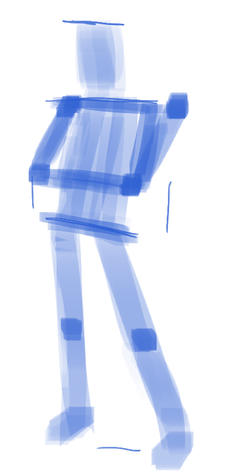
第二步——概括，用矩形去概括头胸髋，四肢，用圆形概括关节，手脚当前使用四边形简单概括即可。这一步其实仍旧是形状思维。这一步可以认为是细化面积，修正形状和比例，即迭代。高手也迭代！
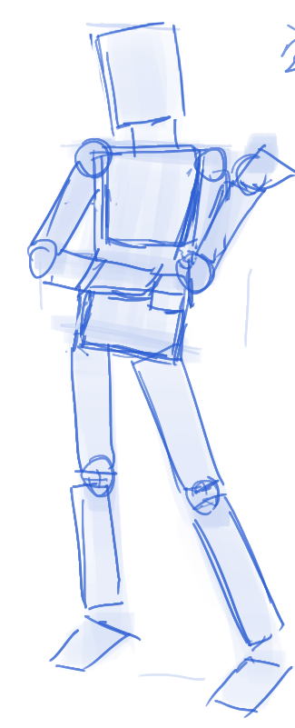
一个tip：小臂的形状可以用一种简单方法概括——将它二分，对大拇指的一端，是一个弧线一个直线，小拇指一端是一整个弧线。
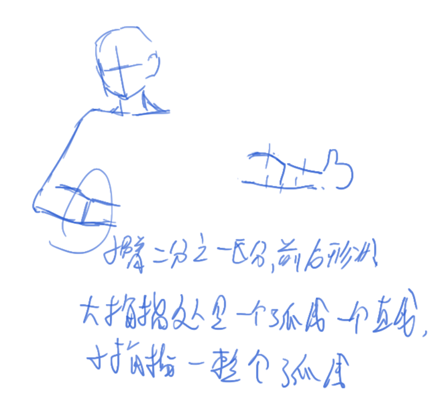
第三步——关注具体面积（形状），这一步仍旧是以形状思考，去抄，后面要以空间思考。这一步就是在原来的形状（矩形，圆形）上做加减，不断以原来的形状作为参考信息。第一二步完成后，第三步会很容易完成，这就是参考信息的力量，整体的力量。
每一步都要反复做检查！不做检查等于没画！
形状要自信，即使没有细节，自信的形状会唬住人。
整体和局部，以全身为整体，头部则是局部，以头部为整体，脸则是局部。
对于脸，头型漂亮的重要性甚于五官！
人体纯背骨骼是没有意义的，（看得见的）骨骼和肌肉应当联合起来去进行概括，学习。
手。
要画好看的手，不是从结构出发，不是从透视出发，而是从型态（形状？）出发。
只有手的姿势好看，手才会好看，而好看的型态只有那么一些可以枚举。在型态之后才是结构，透视。就像人体一样。
画手时不必死磕参考，参考只是参考，目的不是画的和参考一样，而是把手画出来。以及，画手时也关注手的整体而非细节，整个手要像手！
手的形状的核心是这样的：
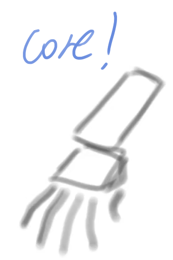
这个下臂和手掌，是一个层叠的关系，但同时也有一些横移——手掌会稍微偏向大拇指方向一些（这个……暂定！好像老师自己也没保持这个一致性），这个也体现在人体的概括的第二步中。
手指头和手掌一样长，手指是一样宽的。
手指可以像躯干一样用一笔概括，后续再添加形状。最开始用一笔概括，然后用两笔概括（加重最后一关节线条），即按手指只有两节去绘制。
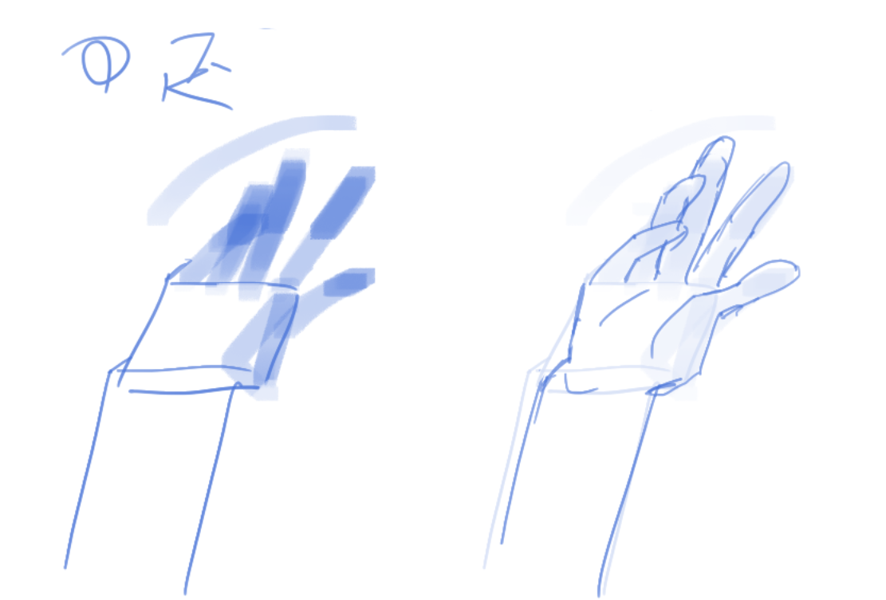
画手（和人体）时，骨感重于肉感，毕竟有了骨头就能够后续加肉，而无法反之。
学东西时要学会（暂时地）放弃（这就是专心吧！），在学整体时要放弃局部……专心在所学的东西上，其他的都是无关紧要的细节，可以放弃。比如在专注形状的时候，可以放弃好的线条，蹭线？无所谓，因为我现在关心的是形状。
画画要画的自由，是因为有支撑，有据可依。我们看大师的作画过程总是关注细节，但更重要的是细节之前的东西，即整体。
顺便，从斋藤老师以及某eh上找到的绘画教程来说，可以尝试把中指和无名指合并，当作一根手指来画，后续再去做区分，这有助于保持四根手指的平衡。
D02
心态，驱动力。
关于像，基础阶段像是褒奖（但像不是“还原”，我们不应当和相机抢生意）。进阶是表达自己严重的世界，这时候像就不是必要的。但先有像才有不像，知道边界，知道何时break。
线条就像作文的字（更关键的是这些字所表达的东西，即形状）。
宁脏勿净，第一笔永远是错的，错的痕迹应当保留，要修正错误而非重来，这意味着保留修改的痕迹，视错误为辅助线，作为迭代的基础，撤销等于白画。（其实也不全是白画吧，错误的印象还会在脑子里保留一瞬间呢）。
对别人的画，不要去看它的缺点，去看它的优点，三人行必有我师焉。（我不太同意，缺点也要看，择其善者而从之，其不善者而改之嘛）。
人体会有曲直交替出现的节奏，抓住它，强调它，在这一点上不必复刻原图，加入自己的理解。
头和脸的关系在于耳朵。
造型意识，就是看不出来时能自己编。
画的慢允许控制形状，而非每次的线条都是抽奖。要训练自己先想再画。
脚。
脚比手简单。
每个人的脚都不一样（其实手也如此），所以有偏差也 OK。
脚分为三部分——前脚掌，足弓，脚后跟。
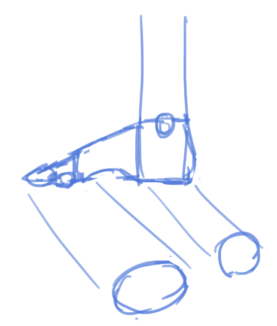
脚使用三维去理解——找前脚掌和脚后跟在地板上的形状，建立厚度，然后绘制足弓将它们连接起来。
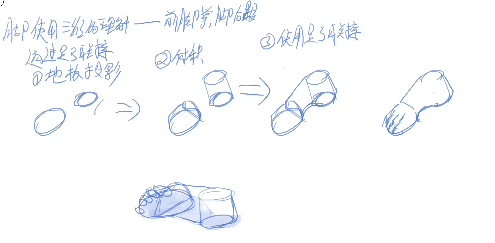
鞋使用同样的逻辑——因为鞋的结构同脚的结构，但鞋底的形状有差异。注意鞋底形状并非对称，鞋头会朝内侧一些。（脚是否也是如此？后面细学）
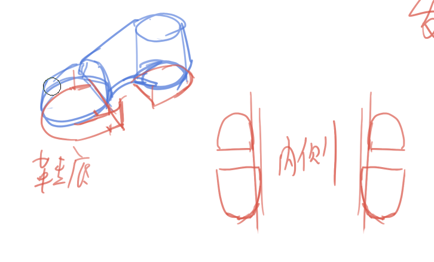
鞋的结构同脚的结构，发散思维一下，衣服的结构当然也同人体的结构。
关于衣褶，衣服（版型）好看比衣褶更加重要，衣褶如果要绘制必定要有一定的目的——暗示动作，内部的结构……
会画人体结构，就会画衣褶。不要练习纯粹的褶皱，因为这无意义，衣褶必定有其目的。（倒也不能说这么死吧？比如窗帘啥的褶皱，要体现出来它就是窗帘啊hh）
D03
今天是刃老刃老师。
关于第一步即观察，看头，胸，髋，中线，轴线（轴线指的是和中线垂直的线）。
中线：脸中线，胸骨柄-剑突，脐-耻骨联合。
- 胸骨柄：两个锁骨连接的地方，领结状。
- 剑突：两肋骨下方的一个等腰三角形的顶角的突起
- 耻骨联合：胯下
和中线（在画面上）垂直的就是轴线。（这一句恐怕不泛用，因为老师强调了是画面上平行，这让它更多只有在面向镜头时才适用）。
轴线有眼睛（对喜欢鲁米斯法的人来说是眉骨吧），锁骨，乳头，髂（qia 四声）前上棘……
检查的具体：比例，斜度，重心（头部做垂线），负空间。
趋势线。趋势线是可以无限延长的（！）。
动态，flow，比形准更加重要。
重复——每一步都要检查整个的比例，检查时先看大的，看头胸髋，看各个关键点围成的形状。
强调韵律——让人体的各部分去形成流势，强调这个流势而非破坏它。
人体的曲线的节奏并非是对称的，不要画成米其林轮胎人。
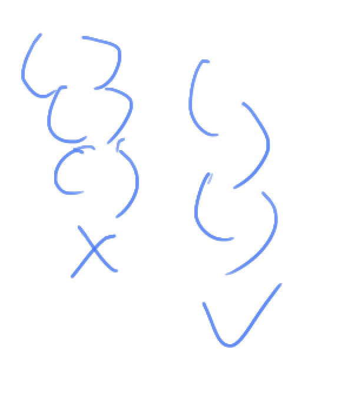
D04
一张比一张画的好是不可能的，整体上是上升的，局部上是起伏的，问题是让下限提高。
为何不从透视出发？透视是理性的，准确的（拿透视画人体还真不见得如此……），但是是僵硬的，从平面入手则更重形状，好看，好看非常重要。
先要形状好看，再要透视准确。先以形状思维思考，画出好看的形，再以空间思维思考，去修正过于不合理的地方，让它相对更合理。
先感性，再理性，可以说，在这里理性就是用来做检查的，来修正感性。理性会让你陷入局部正确，忽略（整体的？）表达。
感性，你要在心里有所画的东西的印象，这个人在做什么，是什么状态？
探头，挺肚，摆臂，前奔。
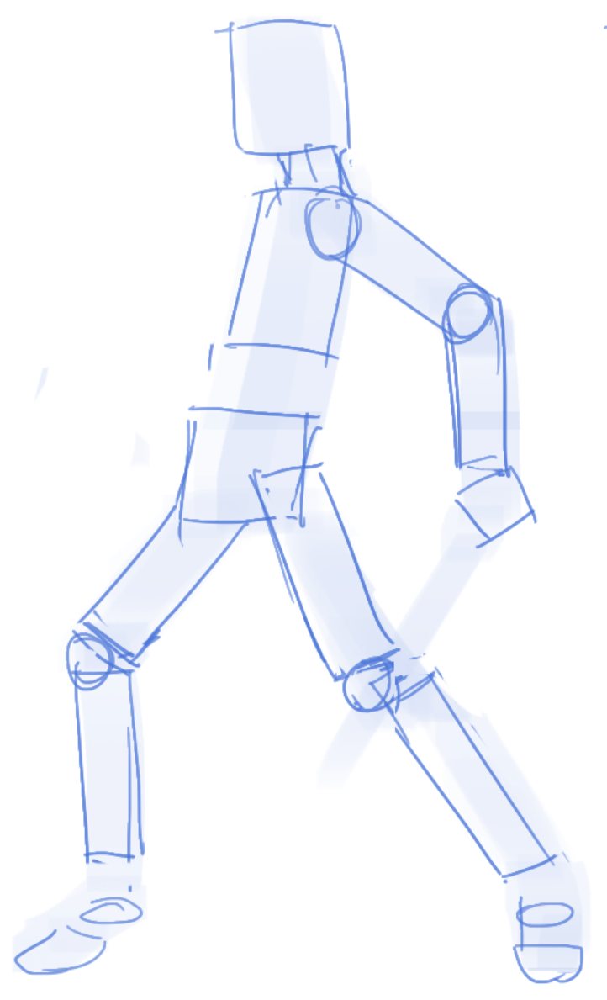
第一步（动态）是感性的，第二步是相对理性的——用几何形抓人体比例，结构。
小插曲——（空间？）层次重于体积。前后遮挡关系比自己的素描关系更加重要，这也是一种整体大于局部的体现。
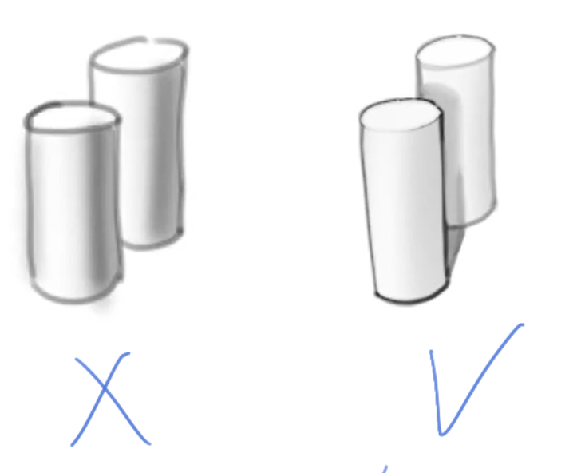
关于观察，找关键的点围成的形状，抓大放小——小的误差可以丢，大关系不能错。
一笔抓（修）大型是很重要的。
细节是最容易的东西，整体理解越深，细节学的越快，甚至说细节是在理解整体后自动获得的。（我表示质疑，我期待老师更加详细的论证）
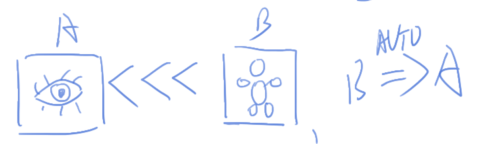
人体的准度并非最重要（再次重复）。
大胆下笔，小心调整。
观察力——比例，斜度。比例的本质就是比较两根线段的长度的比例，以及从一根线段中找n分之一；斜度即对任意直线知晓它在水平方向、竖直方向上的投影的长度的比例（其实就是tan）。
空间层次——前后关系，遮挡。层次要有节奏（节奏就是组织？）。有用力的部分（强调近的），有松散的部分（概括远的）。
层次带来灵气，灵气应当是设计出来的——通过主动加入更多节奏。
练习是练习，目的是暴露问题！不要以“他人的眼光”，即对外人看来是否好看，去做评判。创作则是遮掩问题。
D05
嘉宾课。
一幅画就其最底层来说，是不同的形状、调子的组合。
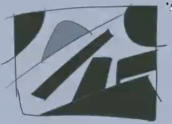
（空间）层次关系必须定义清楚，为此可以清理线条。
说到层次我脑子里总是V大的一二三级形……但考虑到我们没必要原样复刻原图，而是更多地去追求动态啥的，或许V大的这些为精准抓型的理论应该放弃。
另一种脚的概括方法（同样是3D）：
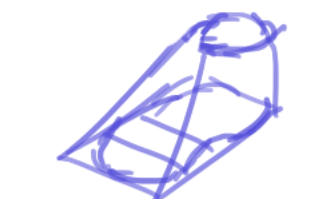
现在画人体很多都是抄，但抄多了就会了！在将来学细节的时候，现在的抄会起到作用。
自信就是接受目前的自己，无论是好的还是坏的，但同时也坚信自己能够按自己的意愿去改造自己。
膝盖和脚是同一朝向（80%以上情况）。
老师认为人体最复杂的部分是膝盖和肩锁关节。
画面重要是要表达好——达意，而非华丽辞藻堆砌。
我要向自己强调我自己得另外做速写练习，并且要做几次细化，细化！！！我自己做细化，课上继续做整体。
结构（解剖，具体的骨骼、肌肉等）信息不是最重要的，它的用途是辅助比例和趋势，它们才是最重要的——所要表达的东西。
D06
画速写的目的，就是能够快速把一个轮廓抓住成创作，比如刃老刃老师，从各种污渍为启发，利用它的轮廓去绘制成各种玩意儿。
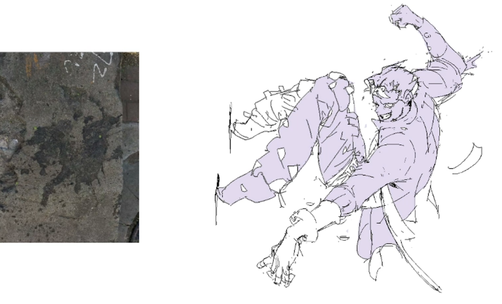
我发现我现在看着感觉每一张都特别熟悉好像画过……
女性胸廓较小。
定完趋势后要考虑重心。
下一周是盒子人？那这一周就是gesture和bean了，和proko的组织一致。
在许多情况下，势胜过形，确保趋势很多时候比形状对（像原图）重要。顺着趋势画，形状次要。
D07
刃老刃老师似乎习惯先画胸髋再画头。
再次强调观察——先看头胸髋角度（胸的角度要考虑到肩膀如果肩膀有动），然后是趋势（其实就是说根据角度去作为看趋势的参考？），再是头胸髋的比例。
推进画面时，不同局部的信息量应当尽量保持一致，不要死命细化某个地方。
本博客所有文章除特别声明外，均采用 CC BY-NC-SA 4.0 协议 ，转载请注明出处！